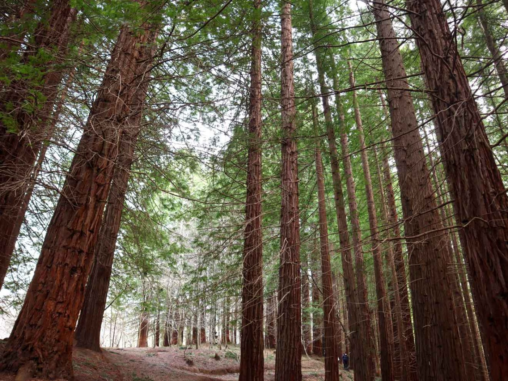
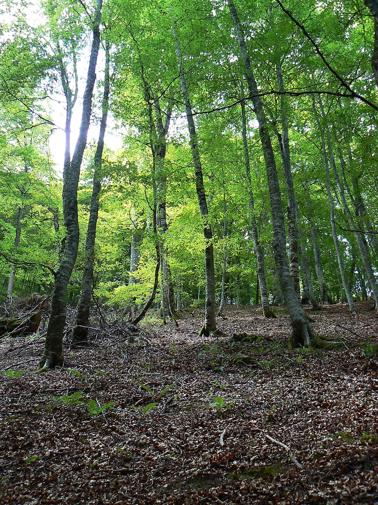
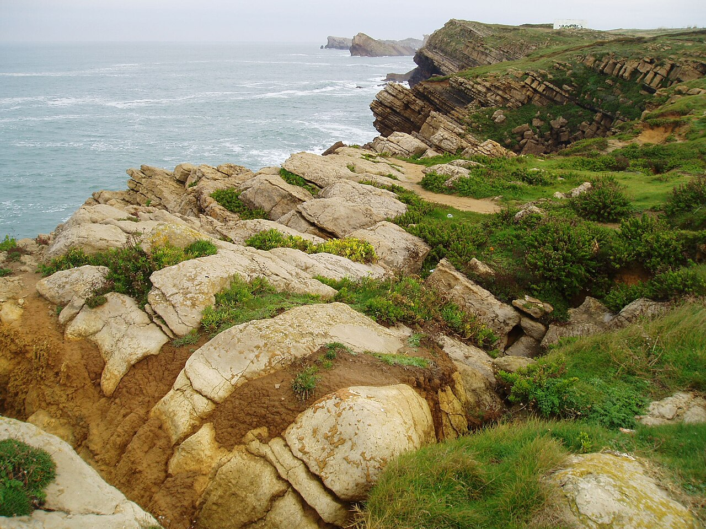
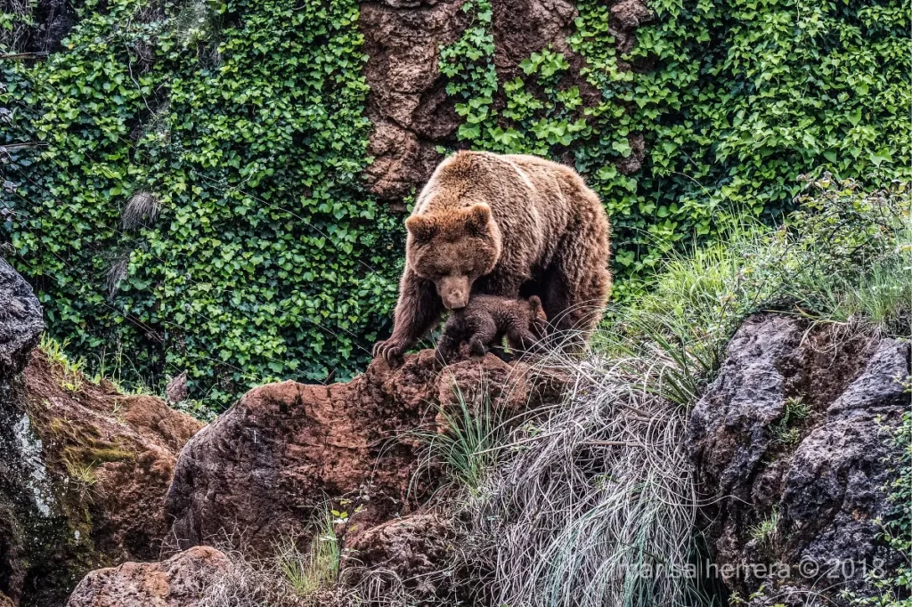
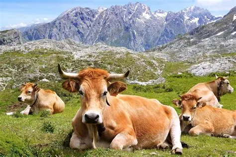
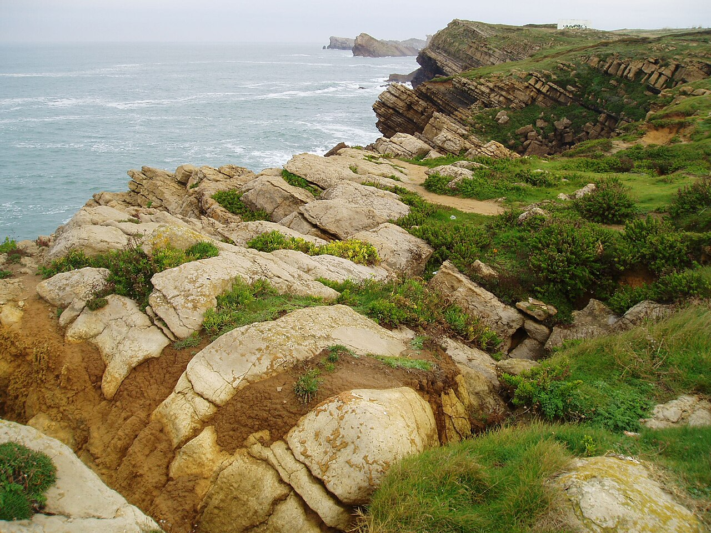
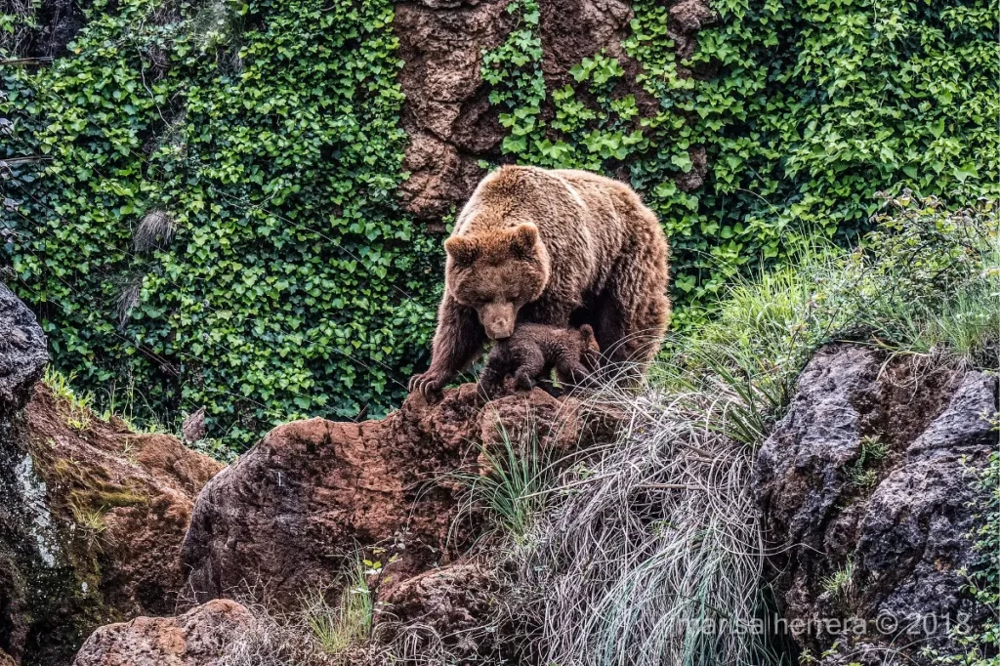
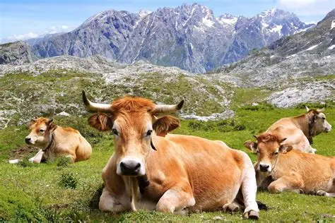

Fuente Dé - Mirador
Dificultad: Dificil
Distancia: 10.5 km
Ruta alpina con pendientes fuertes y miradores espectaculares sobre los Picos de Europa. Ideal para senderistas con experiencia.
Recorrido completo: La ruta comienza en la estacion del teleferico de Fuente Dé, asciende por el canal del Embudo, continua bordeando el circo glaciar y llega al mirador superior. El regreso puede hacerse por el mismo sendero o tomando el teleferico de bajada.


Monte Buciero - Santoña
Dificultad: Moderada
Distancia: 8.2 km
Ruta costera con caminos bien marcados, acantilados, miradores al mar y vistas a la ría de Santoña. Perfecto para fotografias.
Recorrido completo: La ruta comienza en el paseo maritimo de Santoña, donde se pueden subir unas escaleras que te llevan detras del fuerte San Martín. A medida que avanzas, el camino se adentra en un paisaje boscoso, dominado por encinas y madroños. La ruta incluye varios puntos de interes, como el Faro del Caballo al que se accede bajando 76o escalones. Este faro es uno de los principales atractivos de la zona y ofrece vistas espectaculares del mar Cantábrico. Despues de visitarlo, se continua hacia el Faro del Pescador, desde domde se ven la playa de Berria y la carcel "El Dueso". El camino sigue hasta el barrio del Dueso pasa por un parque y una pista de futbol, y finaliza en el Fuerte del Mazo, con vistas espectaculares a las marismas y a la villa de Santoña.


Bosque de Secuoyas - Cabezon de la Sal
Dificultad: Fácil
Distancia: 3 km
Paseo sencillo y accesible entre secuoyas gigantes, vegetación autóctona. Muy visitado y perfecto apta ir en familia.
Recorrido completo: La ruta es un paseo circular muy sencillo que comienza en el aparcamiento del bosque. Desde allí se sigue un sendero amplio y bien señalizado que se adentra entre las enormes secuoyas rojas, creando un ambiente muy sombreado y fresco. El camino recorre varias zonas de árboles grandes y pasa por áreas de descanso y miradores naturales del bosque. Tras completar el circuito entre las secuoyas, el sendero vuelve al camino principal y regresa al punto de partida, completando así una ruta corta, cómoda y apta para cualquier edad.

Playa de Oyambre - Comillas
Dificultad: Fácil
Distancia: 6 km
Ruta costera ideal para paseos tranquilos, con playas, dunas y acantilados bajos, perfectos para fotos y para disfrutar de la brisa del Cantábrico.
Recorrido completo: La ruta comienza en el aparcamiento de la playa de Oyambre, sigue el sendero costero bordeando las dunas y acantilados, llega hasta el Faro de Comillasy regresa por el mismo camino, pasando por miradores naturales y pequeñas calas.

Flora y Fauna de Cantabria
Cantabria es un paraíso natural donde conviven bosques atlánticos, praderas costeras y sistemas montañosos. Entre los árboles más comunes se encuentran el haya, el roble y el abedul, mientras que en zonas costeras predominan los eucaliptos y encinas.
En cuanto a la fauna, es posible encontra corzos, jabalíes, tejones y, con algo de suerte, el urogallo cantabrico. Las aves rapaces, como el buitre leonado y el águila real, son habituales en los Picos de Europa.
 





Consejos para practicar Senderismo
- Planifica la ruta con antelación y revisa el pronóstico del tiempo.
- Llevar calzado adecuado, preferiblemente btas de montaña.
- No olvides agua, comida y protección solar.
- Respeta el entorno natural y sigeu los pasos señalizados.
- Informa a alguien de tu itinerario en rutas largas o de alta montaña, y ve acompañado preferiblemente de un especialista en senderismo.
Historia del Senderismo de Cantabria
El senderismo ha sido parte de la vida rural cántabra durante siglos, ya que los antiguos conectaban pueblos, pastos y zonas de pesca. Con el paso del tiempo, muchos de estos senderos se han recuperado y señalizado como rutas turísticas.
Hoy en día Cantabria cuenta con cientos de rutas homologadas, desde paseos cortos hasta travesías de alta montaña, convirtiéndose en un destino de referencia para amantes de la naturaleza.